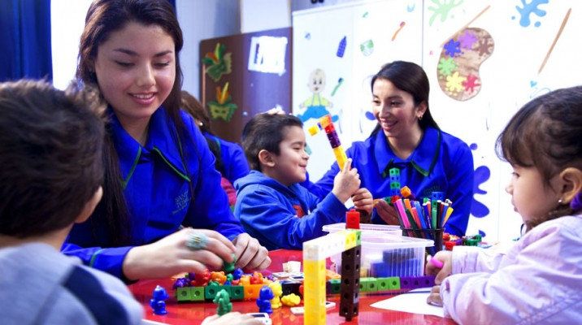
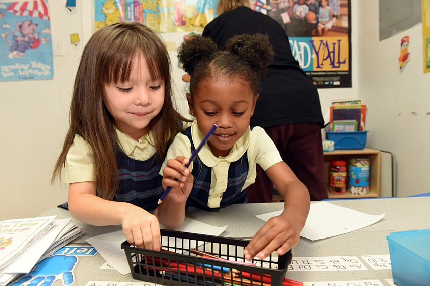
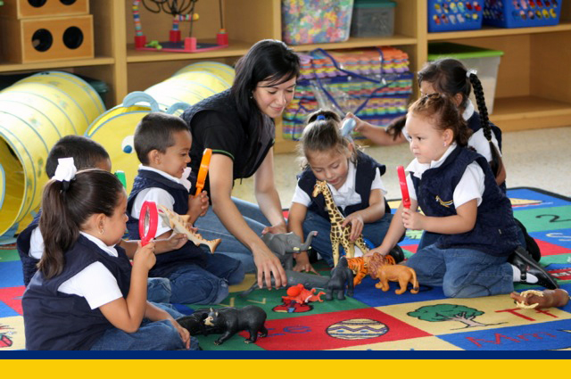

Nuestros Servicios
En Preescolar Mis Pequeñines ofrecemos un espacio educativo y seguro, diseñado para cada etapa del desarrollo de los niños.

Párvulos
Actividades de estimulación temprana que ayudan al desarrollo físico y emocional.
Admisión
Pre-Kinder
Aprendizaje inicial con juegos, canciones y dinámicas que fortalecen la creatividad.
Admisión

Kinder
Desarrollo de habilidades básicas en lectura, escritura y matemáticas de forma divertida.
Admisión

Pre-Primario
Preparación para primaria con enfoque en valores, convivencia y hábitos de estudio.
Admisión